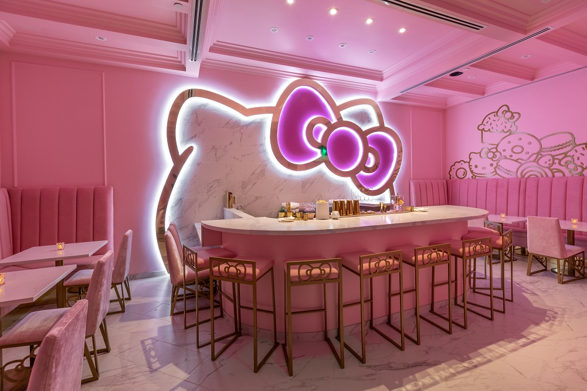
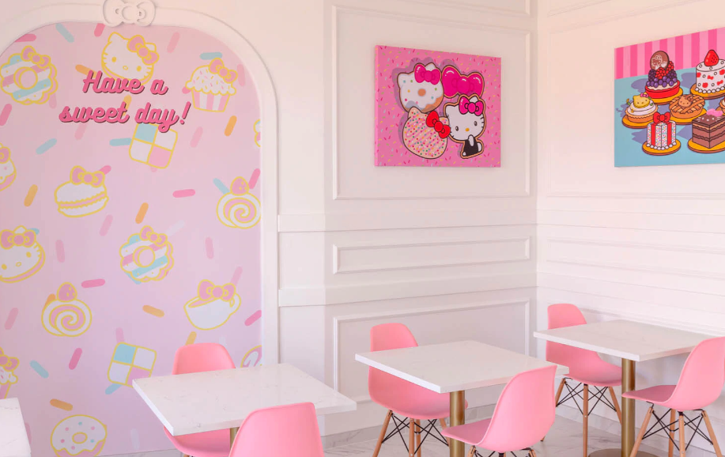

Hello Kitty Grand Cafe offers a supercute menu featuring freshly baked cookies, cakes, donuts, seasonal goodies,
and handmade hot and iced drinks, along with a selection of Hello Kitty Cafe merchandise and a sweet seating
area to enjoy the experience. Stop by and say hello!
This Hello Kitty-themed Grand Cafe is a temple of pink-hued cuteness and they have new lemony treats on the
menu.
Sanrio lovers, this one’s for you! The world’s most recognized cartoon cat was translated into a heavenly foodie
experience at the Irvine Spectrum Center in 2018. Featuring not one, but two spaces – with three different
themes. One side is the Hello Kitty Grand Cafe, a relaxed casual spot that offers made-to-order donuts, Sanrio
character mini cakes, and lattes with beloved Ms. Kitty’s face printed on the foam.
The opposite side, The Bow Room at Hello Kitty Grand Cafe , is probably where you’ll be spending
most of your
time. High tea is served during daylight hours and once the clock strikes 5 pm the pink palace turns into a 21+
cocktail lounge. Whether you plan on sipping tea with Hello Kitty-shaped sugars or cocktails like the Matcha
Matcha which includes Japanese whiskey.
If you’re looking for a girl’s night that will transport you back to your childhood, we’ve found the perfect
spot. Afternoon tea service can be reserved on Fridays from 11 am until 2:30 pm, and weekends from 10 am to 3:30
pm. Cocktail service at the Bow Room can be reserved Fridays and Saturdays from 5 pm to 9:30 pm.
How to make a reservation at Hello Kitty Cafe

Reservations are exclusively for Afternoon Tea and Cocktail Service in the Bow Room. Reservations are recommended
for guaranteed seating. Walk-in's are welcomed but only based on availability and are not guaranteed. The Cafe
is open daily for grab-and-go items and does not require a reservation.
The Afternoon Tea service is a $60 per person, prix fixe menu which includes sweet and savory items and a pot of
tea of your choice. Afternoon Tea is a family friendly experience; all guests ages 4 and over are required to
partake in the tea menu.
Cocktail Service is for 21+ guests only; minors will not be allowed into the Bow Room during this time and will
be turned away if guests do not have a valid form of ID indicating they are of age. Cocktail Service specializes
in Hello Kitty themed craft cocktails and are ordered a la carte.
Q: Is there a difference between the Hello Kitty Cafe locations and the Hello Kitty Cafe Truck?
A: Both locations serve up many items that are supercute however the Hello Kitty Cafe locations brings
to fans a larger menu such as cakes, tarts, pastries, and beverages while the Hello Kitty Cafe Truck's
menu is a little smaller since it has to travel to greet fans across the country!
Q: How is Hello Kitty Grand Cafe different from other Hello Kitty Cafes?
A: Hello Kitty Grand Cafe is the latest evolution of the Hello Kitty Cafe experience and the first cafe
of its kind in the US. It offers an expanded menu featuring freshly baked cakes, cookies, donuts,
seasonal goodies, and handmade hot and iced drinks, along with a selection of Hello Kitty Cafe
merchandise and a sweet seating area to enjoy the experience.
Additionally, special Afternoon Tea and the evening Cocktail Service are offered via reservation at The
Bow Room at Hello Kitty Grand Cafe. The Bow Room occupies a separate space behind the Hello Kitty Grand
Cafe.
The Bow Room does accept walk-ins, on a first-come, first-served basis pending availability, but we do
recommend making a Reservation.
Q: What is The Bow Room at Hello Kitty Grand Cafe?
A: The Bow Room at Hello Kitty Grand Cafe is a separate space behind the Hello Kitty Grand Cafe at the
Irvine Spectrum Center and offers afternoon tea and an evening cocktail service that can be experienced
by making a reservation.
The Bow Room does accept walk-ins, on a first-come, first-served basis pending availability, but we do
recommend making a Reservation.
Q: How can I make a reservation for The Bow Room at Hello Kitty Grand Cafe?
A: Make a reservation online here for parties of 6 or less. For parties of more than 6, email
hellokittycafereservations@sanrio.com.
Be advised that The Bow Room at Hello Kitty Grand Cafe requests a credit card number to hold
reservations. There is no charge for cancellations within 24 hours of the reservation time, but a $25
per person charge will be applied for late cancellations and no-shows. (e.g. For a party of 4 the
cancellation fee would be $100).
Q: How far in advance can I make a reservation for The Bow Room at Hello Kitty Grand Cafe?
A: All reservations for parties of 6 or less can be made up to 60 days in advance online here.
For
reservations of parties more than 6, email hellokittycafereservations@sanrio.com.
The Bow Room does accept walk-ins, on a first-come, first-served basis pending availability, but
we
do recommend making a Reservation.
Q: Are there any age restrictions for The Bow Room at Hello Kitty Grand Cafe?
A: For Afternoon Tea service, anyone over the age of 3 will need a reservation. Children 3 and
under are welcome to join but will not have their own place setting without a reservation. If
you would like for them to have their own place setting, you will need to make a reservation
that includes them.
For the evening Cocktail Service, only those who are 21 and over may be allowed into The Bow
Room as alcohol will be available for purchase. IDs will be checked at entrance before entering.
Q: Is there a dress code for The Bow Room at Hello Kitty Grand Cafe?
A: We want you to be comfortable and have a wonderful time. Traditionally for an afternoon tea,
dressing smartly is always a smart choice. For the evening cocktail service, dressy attire is
strongly encouraged, this means no beachwear such as tank tops, shorts and sandals.